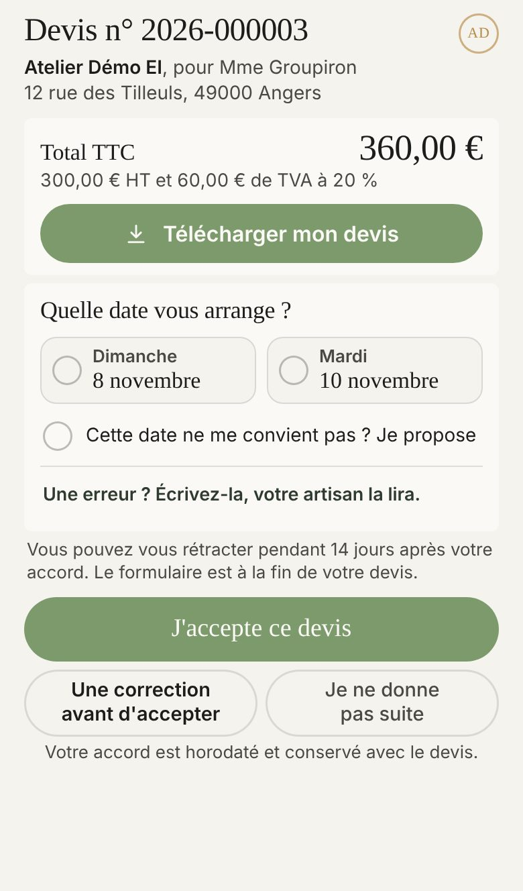
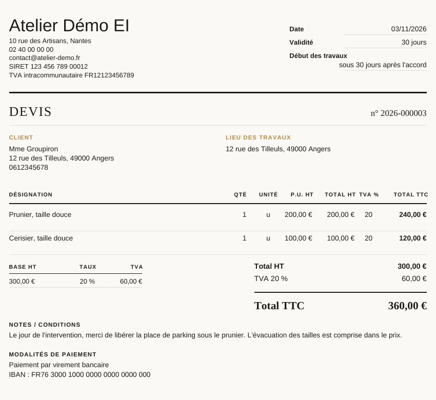

Proposé
Devis n° 2026‑000003
Atelier Démo EI, pour Mme Groupiron
12 rue des Tilleuls, 49000 Angers
Total TTC
360,00 €
300,00 € HT et 60,00 € de TVA à 20 %
Télécharger mon devisQuelle date vous arrange ?
Vous pouvez vous rétracter pendant 14 jours après votre accord. Le formulaire est à la fin de votre devis.
Votre accord est horodaté et conservé avec le devis.
Aujourd'hui

Ce qui existe déjà
- Sur ton devis, le champ « Notes / conditions », sous les totaux. Ce que tu y écris est pour ce devis seulement.
- Le PDF l'imprime, sous les totaux, avant le paiement.

Ce qui change
- La note apparaît aussi sur la page que ton client ouvre depuis le SMS, après « À savoir : ». Aujourd'hui il accepte sans l'avoir lue, sauf s'il télécharge le PDF.
- Elle tient en deux lignes sur la page. Plus longue, elle s'ouvre en entier d'un appui, dans une feuille : la page tient toujours dans l'écran. Touchez la note.
- Sans note, la page ne change pas d'un mot. Touchez « Sans note ».
- Rien de neuf à remplir pour toi : c'est le même champ.
À trancher
- A, juste avant « J'accepte ce devis », comme sous le « Bon pour accord » de ton exemple : lue au moment où il s'engage. Ou B, sous le total : lue en premier.
- Sur le PDF, la note reste sous les totaux. La descendre sous le cadre de signature, comme sur ton exemple ?